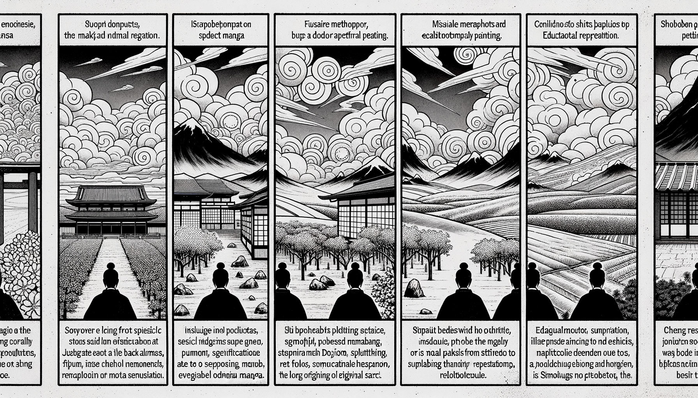

七十五巻 巻一覧
正法眼藏第41 三界唯心
本紹介ページの導入・語彙・深掘り・クイズは tools/regen_volume_intro_from_corpus.py が OpenAI API で生成したものです（入力は当巻の原文からの短い抜粋のみ）。内容はモデル出力のため、重要箇所は必ず原文・教本と照合してください。
出典: https://shomonji.or.jp/zazen/doc/genzou.html
原文・現代語訳の全文は 全文ページを参照してください。
この巻の紹介（導入）
釋迦大師道、三界唯一心、心外無別法。
心佛及衆生、是三無差別。
語彙の足場
- 三界：三界とは、欲界、色界、無色界の三つの世界を指し、仏教においては生死の苦しみが存在する場所とされる。
- 唯心：唯心とは、心がすべての現象を生み出すという考え方であり、心が真実の本質であるとする仏教の教えを表す。
- 如来：如来とは、仏陀の称号の一つで、真理を悟った者を指す。特に釋迦牟尼佛を指すことが多い。
- 所見：所見とは、物事を見たり理解したりすること、またはその視点を指し、三界の理解において重要な概念である。
- 衆生：衆生とは、すべての生きとし生けるものを指し、仏教では苦しみから解放されるべき存在とされる。
原文（要点の抜粋）
当巻の冒頭付近からの短い抜粋です。長い引用は載せていません。 全文は全文ページを参照してください。出典はリポジトリ内 doc/正法眼蔵.txt です。原文の参照元: https://shomonji.or.jp/zazen/doc/genzou.html
釋迦大師道、
三界唯一心、心外無別法。
心佛及衆生、是三無差別。
一句の道著は一代の擧力なり、一代の擧力は盡力の全擧なり。たとひ強爲の爲なりとも、云爲の爲なるべし。このゆゑに、いま如來道の三界唯心は、全如來の全現成なり。全一代は全一句なり、三界は全界なり。三界はすなはち心といふにあらず。そのゆゑは、三界はいく玲瓏八面も、なほ三界なり。三界にあらざらんと誤著すといふとも、摠不著なり。内外中間、初中後際、みな三界なり。三界は三界の所見のごとし。三界にあらざるものの所見は、三界を見不正なり。三界には三界の所見を舊窠とし、三界の所見を新條とす。舊窠也三界見、新條也三界見なり。このゆゑに、
釋迦大師道、不如三界、見於三界。
この所見、すなはち三界なり、この三界は所見のごとくなり。三界は本有にあらず、三界は今有にあらず。三界は新成にあらず、三界は因緣生にあらず。三界は初中後にあらず。出離三界あり、今此三界あり。これ機關の機關と相見するなり、葛藤の葛藤を生長するなり。今此三界は、三界の所見なり。いはゆる所見は、見於三界なり。見於三界は、見成三界なり、三界見成なり、見成公案なり。よく三界をして發心修行菩提涅槃ならしむ。これすなはち皆是我有なり。このゆゑに、
釋迦大師道、今此三界、皆是我有、其中衆生、悉是吾子。
いまこの三界は、如來の我有なるがゆゑに、盡界みな三界なり。三界は盡界なるがゆゑに、今此は過現當來なり。過現當來の現成は、今此を罣礙せざるなり。今此の現成は、過現當來を罣礙するなり。
我有は、盡十方界眞實人體なり、盡十方界沙門一隻眼なり。衆生は盡十方界眞實體なり。一一衆生の生衆なるゆゑに衆生なり。
悉是吾子は、子也全機現の道理なり。しかあれども、吾子ならず身體髪膚を慈父にうけて、毀破せず、虧闕せざるを、子現成とす。而今は父前子後にあらず、子先父後にあらず。父子あひならべるにあらざるを吾子の道理といふなり。與授にあらざれどもこれをうく、奪取にあらざれどもこれをえたり。去來の相にあらず、大小の量にあらず、老少の論にあらず、老少を佛祖老少のごとく保任すべし。父少子老あり、父老子少あり。父老子老あり、父少子少あり。ちちの老を學するは子にあらず、子の少をへざらんはちちにあらざらん。子の老少と、父の老少と、かならず審細に功夫參究すべし、倉卒なるべからず。父子同時に生現する父子あり、父子同時に現滅する父子あり。父子不同時に現生する父子あり、父子不同時に現滅する父子あり。慈父を罣礙せざれども吾子と現成せり、吾子を罣礙せずして慈父現成せり。有心衆生あり、無心衆生あり。有心吾子あり、無心吾子あり。かくのごとく、吾子、子吾、ことごとく釋迦慈父の令嗣なり。十方盡界にあらゆる過現當來の諸衆生は、十方盡界の過現當の諸佛なり。諸佛の吾子は衆生なり、衆生の慈父は諸佛なり。しかあればすなはち、百草の花果は諸佛の我有なり、巖石の大小は諸佛の我有なり。安處は林野なり、林野は已離なり。
しかもかくのごとくなりといふとも、如來道の宗旨は吾子の道のみなり、其父の道いまだあらざるなり、參究すべし。
釋迦牟尼佛道、諸佛應化法身、亦不出三界。三界外無衆生、佛何所化。是故我言、三界外別有一衆生界藏者、外道大有經中説、非七佛之所説（諸佛應化の法身も、また三界を出でず。三界の外に衆生無し、佛何の化する所かあらん。是の故に我れ言ふ、三界の外に別に一衆生界藏有りといふは、外道大有經中の説なり、七佛の所説に非ずと）。
図解（4コマ・AI生成）
教義の根拠は原文・出典に従い、漫画は比喩の補助に留めてください。

深掘り（読解の手掛かり）
- 三界は心によって形成されるという教え。
- 心と仏、衆生は無差別であるという考え。
- 如来の道は三界の理解に基づく。
確認（形成評価）
各設問の下の「採点」で正誤を表示します（ブラウザ内のみ。ログは送りません）。